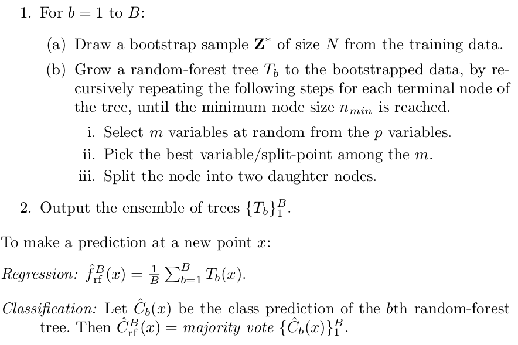

Google EarthEngine позволяет быстро строить модели для обработки данных ДЗЗ, но в текущей версии GEE нет каких-либо функций, которые обеспечвают поиск оптимальных параметров моделей. Возможно, они появятся позднее (GEE очень быстро развивается), но сейчас приходится выкручиваться самостоятельно.
Пока самый простой в реализации способ из обнаруженных -- подбор параметров внешним скриптом. Общая идея такова:
- пишется модель на Python API, которая выполняет нужные нам действия;
- модель оборачивается в функцию, которая принимает на вход параметры модели или в отдельный скрипт, который принимает параметры из командной строки и затем вызвается из нее;
- строится цикл, состоящий из процедур обучения модели и проверки качества ее работы; в этом цикле по той или иной схеме перебираются параметры модели; самый простой вариант -- поиск параметров на решетке, но можно и заморочиться тем, что скрипт закидывается в специальный софт для оптимизации.
Ниже на примере подбора параметров случайного леса.
Предварительные действия
Необходимо сначала:
- установить Python API, процедура хорошо описана в официальной документации, нет смысла повторяться;
- получить ключ доступа к движку GEE, выполнив из командной строки:
earthengine authenticate
появится поле ввода и ссылка, по которой нужно перейти, а затем ввести ключ в поле ввода;
- в любом скрипте, в котором будет происходить работа с GEE нужно будет перед началом всех действий инициализировать GEE; простейший пример:
import ee
# Initialize the Earth Engine module.
ee.Initialize()
# Print metadata for a DEM dataset.
print(ee.Image('USGS/SRTMGL1_003').getInfo())
Подбор параметров модели
Готовый к использованию код лежит в репозитории. Ниже описываются лишь основные моменты, необходимые для понимания, но нужно учитывать, что в исходном коде из репозитория есть детали, не влияющие на прицнип, но внесенные в код из практических соображений использования.
Вся система состоит из двух файлов:
- trainner.py: файл-обертка над функциями обучения, содержит процедуру подбора параметров, оформлено все в виде утилиты командной строки;
- utils.py: файл содержит основные функции (описание моделей, расчет точности и т.п.).
Модель и оценка точности
Данные функции определяются в файле utils.py
Описание классификатора
Алгоритм случайного леса строит \(B\) деревьев, каждое из которых в классическом варианте конструируются по следующей схеме:

Модель случайного леса, используемая в GEE содержит следующие настраиваемые параметры:
- numberOfTrees: число деревьев, используемых при построении леса (величина \(B\) в обозначениях алгоритма);
- variablesperSplit: число переменных, участвующих в разбиении пространства признаков при построении леса (величина \(m\) в обозначениях алгоритма);
- minLeafPopulation: разбиение прекращается при достижении данного числа объектов в узле дерева (величина \(n_{min}\));
- bagFraction: доля примеров, используемых при построении дерева, по отношению к общему числу имеющихся примеров;
- outOfBagMode: использовать ли при построении леса режим "out of bag"; при этом режиме точность классификатора на примере номер \(i\) оценивается только по тем деревьям, в обучении которых данный пример не учавствовал; режим позволяет одновременно обучать и производить перекрестную проверку обучения (дает возможность не переобучаться, но за счет значительного замедления процедуры обучения);
- seed: настройка датчика случайных чисел.
Собственно сама функция, обеспечивающая построения классификатора выглядит следующим образом:
def train(numberOfTrees, variablesPerSplit, minLeafPopulation, bagFraction, outOfBagMode, seed, collection, classname, names):
classifier = ee.Classifier.randomForest(
numberOfTrees=numberOfTrees,
variablesPerSplit=variablesPerSplit,
minLeafPopulation=minLeafPopulation,
bagFraction=bagFraction,
outOfBagMode=outOfBagMode,
seed=seed
).train(collection, classname, names)
return classifier
Она принимает на вход
- параметры классификатора,
- коллекцию обучающих примеров (collection),
- название поля, содержащего метку класса (classname),
- список полей (числовых), которые будут использоваться при обучении (names).
Результатом работы функции является обученный классификатор.
Оценка точности классификатора
Точность можно оценивать различными способами, в данном примере показано, как можно оценить точность и величину Kappa на обучающем и тестовом множествах.
def getQuality(classifier, testCollection, classname):
trainAccuracyMatr = classifier.confusionMatrix();
trainAcc = trainAccuracyMatr.accuracy();
trainKappa = trainAccuracyMatr.kappa();
testAnswers = testCollection.classify(classifier);
testAccuracyMatr = testAnswers.errorMatrix(classname, 'classification');
testAcc = testAccuracyMatr.accuracy();
testKappa = testAccuracyMatr.kappa();
return dict(trainAcc=trainAcc, trainKappa=trainKappa, testAcc=testAcc, testKappa=testKappa, testErrMatr=testAccuracyMatr)
Функция берет на вход обученный классификатор и тестовое множество, а возвращает словарь значений:
- trainAcc: точность на обучающем множестве,
- trainKappa: Kappa на тестовом множестве,
- testAcc: точность на тестовом множестве,
- testKappa: Kappa на тестовом множестве,
- testErrMatr: матрица ошибок на тестовом множестве.
В этой функции жестко прописано название поля, содержащего результаты классификации "classification". По-хорошему его нужно вынести в параметры функции, но это название генерируется автоматически самим классификатором и оно оставлено, чтобы не слишком заморачиваться с числом пробрасываемых сквозь функции параметров.
Обучение и оценка
Объединение описанных выше шагов в одну функцию для удбства работы:
def testCase(image, trainCollection, testCollection, classname, names, params, seed=0):
classifier = train(
numberOfTrees=params['numberOfTrees'],
variablesPerSplit=params['variablesPerSplit'],
minLeafPopulation=params['minLeafPopulation'],
bagFraction=params['bagFraction'],
outOfBagMode=params['outOfBagMode'],
seed=seed,
collection=trainCollection, classname=classname, names=names
)
classified = image.classify(classifier)
qual = getQuality(classifier, testCollection, 'Class')
test, val = qual['trainKappa'].getInfo(), qual['testKappa'].getInfo()
return test, val
Функция обучает классикатор на заданных параметрах, которые передаются в виде словаря значений, и возвращает два числа -- Kappa на тестовом и обучающем множествах.
В этой функции жестко прописано название поля с меткой класса ("Class"), по-хорошему, нужно вынести его в параметры функции. (Но оставлено по принципу "и так сойдет")
Подбор параметров
Подбор параметров был сделан в отдельном скрипте, оформленном в виде утилиты командной строки.
Основой скрипта является функция main, которая производит в цикле процедуру перебора параметров и оценки точности классификаторов для этих параметров на обучающем и тестовом множествах.
Функция подбора параметров
Функция принимает на вход следующие параметры:
- название векторного слоя обучающего множества примеров;
- название векторного слоя тестового множества;
- название растра, который требуется классифицировать; каналы растра -- признаки, использующиеся при классификации;
- название файла формата CSV, в который будут писаться результаты (параметры и точность, достигнутая на этих параметрах);
В этой функции жестко прописано название поля с меткой класса ("Class"), по-хорошему, нужно вынести его в параметры функции. (Но оставлено по принципу "и так сойдет"). Поле 'system:index' генерируется автоматически GEE и не несет никакой смысловой нагрузки, поэтому удаляется сразу же.
Вообще в этой функции много жестко зашитых параметров (число проверямых деревьев, число листьев и т.п.), но этот скрипт используется в экспериментов, поэтому все эти параметры правятся по необходимости и под каждую задачу. Поэтому (ИМХО) нет большого смысла их параметризовывать и выносить их вовне.
Функция пробегает по решетке параметров и для каждого набора строит классификатор, а затем оценивает его точность. При необходимости можно перестроить шаг по каждому из параметров.
Важно отметить, что тут во всех классификаторах используется параметр outOfBagMode=False, это позволяет ускорить
процесс работы (хотя и повысить шансы на переобучение).
Кроме того, в случае, когда используется большое число каналов в растре и строится сложный классификатор (число деревьев, листьев),
то может возникнуть ошибка таймаута GEE. В этом случае возникает ошибка ee.EEException, которая отлавливается и игнорируется (с
записью в лог соотвествующего сообщения).
def main(landTrain, landVal, dataSetName, resultCSV, verbose=False):
# Список полей, используемых для обучения:
NAMES = landTrain.first().propertyNames().remove('system:index').remove('Class')
count = len(NAMES.getInfo())
image = ee.Image(dataSetName);
# Собираем список из количества переменных, для которых будут строиться классификаторы
variable_counts = set([int(n) for n in [math.sqrt(count), math.sqrt(count)/2, math.sqrt(count)*2]]) - set([0, 1, 2])
variable_counts = list(variable_counts)
variable_counts.sort()
with open(resultCSV, 'w') as csvfile:
writer = csv.writer(csvfile, delimiter=',')
data = ['trainKappa', 'valKappa', 'numberOfTrees', 'variablesperSplit', 'minLeafPopulation', 'bagFraction']
writer.writerow(data)
for numberOfTrees in [10, 100, 300, 500]:
for variablesPerSplit in variable_counts:
for minLeafPopulation in [10, 50, 300]:
for bagFraction in [0.3, 0.5, 0.7]:
params = dict(
numberOfTrees=numberOfTrees,
variablesPerSplit=variablesPerSplit,
minLeafPopulation=minLeafPopulation,
bagFraction=bagFraction,
outOfBagMode=False
)
try:
trainKappa, valKappa = testCase(image, landTrain, landVal, 'Class', NAMES, params)
data = [trainKappa, valKappa, params['numberOfTrees'], params['variablesPerSplit'], params['minLeafPopulation'], params['bagFraction']]
if verbose:
logging.info(data)
writer.writerow([str(x) for x in data])
except ee.EEException:
logging.error('En error occurs for %s params for %s dataset' % (params, dataSetName))
Итоговый скрипт и его использование
Собственно весь скрипт представляет собой обертку над функцией main: основная часть скрипта -- это анализ параметров командной строки (входные слои, выходной файл). Детали реализации скрипта можно посмотреть в репозитории.
А использование скрипта выглядит примерно так:
python trainner.py \
--train "users/kolesovdm/Steppe/set13Train" \
--val "users/kolesovdm/Steppe/set13Val" \
--image "users/kolesovdm/Steppe/dataSet13" \
--result "set13.csv"
где train -- векторный слой обучающих примеров, val -- векторный слой тестовых примеров, image -- изображение для классификации, result -- куда сохранить параметры и точность, достигаемую на них.